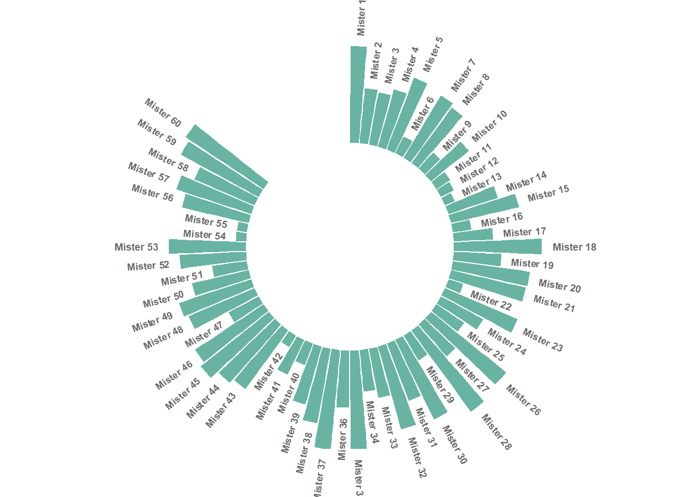
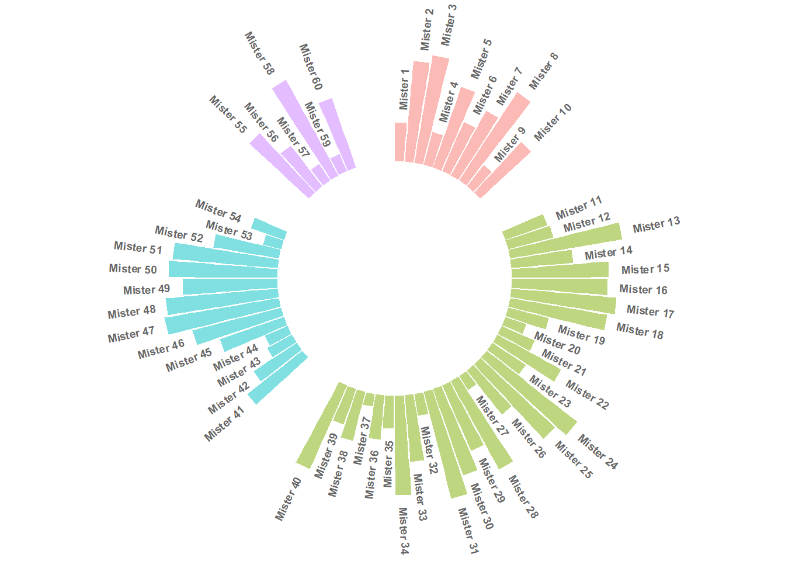
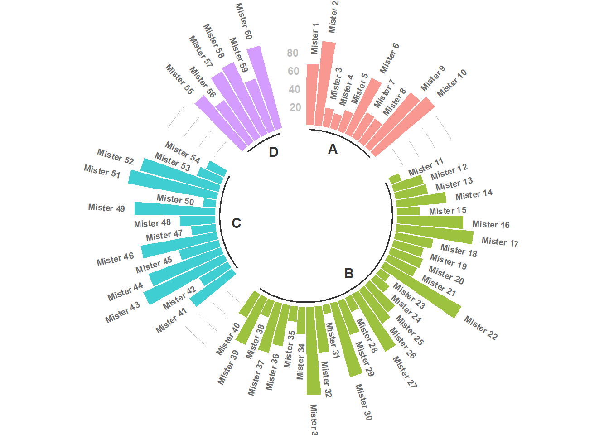

3 A few analysis
Here are 3 version of a circular barplot that you can find in the R graph gallery. Note that the figure is centered. You can change the size of the plot with fig.width and fig.height
3.1 basic
Let’s start with a basic version of a circular representation of the data
# Create dataset
data=data.frame(
individual=paste( "Mister ", seq(1,60), sep=""),
value=sample( seq(10,100), 60, replace=T)
)
# Set a number of 'empty bar'
empty_bar=10
# Add lines to the initial dataset
to_add = matrix(NA, empty_bar, ncol(data))
colnames(to_add) = colnames(data)
data=rbind(data, to_add)
data$id=seq(1, nrow(data))
# Get the name and the y position of each label
label_data=data
number_of_bar=nrow(label_data)
angle= 90 - 360 * (label_data$id-0.5) /number_of_bar # I substract 0.5 because the letter must have the angle of the center of the bars. Not extreme right(1) or extreme left (0)
label_data$hjust<-ifelse( angle < -90, 1, 0)
label_data$angle<-ifelse(angle < -90, angle+180, angle)
# Make the plot
p = ggplot(data, aes(x=as.factor(id), y=value)) + # Note that id is a factor. If x is numeric, there is some space between the first bar
geom_bar(stat="identity", fill="#69b3a2") +
ylim(-100,120) +
theme_minimal() +
theme(
axis.text = element_blank(),
axis.title = element_blank(),
panel.grid = element_blank(),
plot.margin = unit(rep(-1,4), "cm")
) +
coord_polar(start = 0) +
geom_text(data=label_data, aes(x=id, y=value+10, label=individual, hjust=hjust), color="black", fontface="bold",alpha=0.6, size=2.5, angle= label_data$angle, inherit.aes = FALSE )
p
3.2 grouped
# Create dataset
data=data.frame(
individual=paste( "Mister ", seq(1,60), sep=""),
group=c( rep('A', 10), rep('B', 30), rep('C', 14), rep('D', 6)) ,
value=sample( seq(10,100), 60, replace=T)
)
# Set a number of 'empty bar' to add at the end of each group
empty_bar=4
to_add = data.frame( matrix(NA, empty_bar*nlevels(data$group), ncol(data)) )
colnames(to_add) = colnames(data)
to_add$group=rep(levels(data$group), each=empty_bar)
data=rbind(data, to_add)
data=data %>% arrange(group)
data$id=seq(1, nrow(data))
# Get the name and the y position of each label
label_data=data
number_of_bar=nrow(label_data)
angle= 90 - 360 * (label_data$id-0.5) /number_of_bar # I substract 0.5 because the letter must have the angle of the center of the bars. Not extreme right(1) or extreme left (0)
label_data$hjust<-ifelse( angle < -90, 1, 0)
label_data$angle<-ifelse(angle < -90, angle+180, angle)
# Make the plot
p = ggplot(data, aes(x=as.factor(id), y=value, fill=group)) + # Note that id is a factor. If x is numeric, there is some space between the first bar
geom_bar(stat="identity", alpha=0.5) +
ylim(-100,120) +
theme_minimal() +
theme(
legend.position = "none",
axis.text = element_blank(),
axis.title = element_blank(),
panel.grid = element_blank(),
plot.margin = unit(rep(-1,4), "cm")
) +
coord_polar() +
geom_text(data=label_data, aes(x=id, y=value+10, label=individual, hjust=hjust), color="black", fontface="bold",alpha=0.6, size=2.5, angle= label_data$angle, inherit.aes = FALSE )
p
3.3 complex
# Create dataset
data=data.frame(
individual=paste( "Mister ", seq(1,60), sep=""),
group=c( rep('A', 10), rep('B', 30), rep('C', 14), rep('D', 6)) ,
value=sample( seq(10,100), 60, replace=T)
)
# Set a number of 'empty bar' to add at the end of each group
empty_bar=3
to_add = data.frame( matrix(NA, empty_bar*nlevels(data$group), ncol(data)) )
colnames(to_add) = colnames(data)
to_add$group=rep(levels(data$group), each=empty_bar)
data=rbind(data, to_add)
data=data %>% arrange(group)
data$id=seq(1, nrow(data))
# Get the name and the y position of each label
label_data=data
number_of_bar=nrow(label_data)
angle= 90 - 360 * (label_data$id-0.5) /number_of_bar # I substract 0.5 because the letter must have the angle of the center of the bars. Not extreme right(1) or extreme left (0)
label_data$hjust<-ifelse( angle < -90, 1, 0)
label_data$angle<-ifelse(angle < -90, angle+180, angle)
# prepare a data frame for base lines
base_data=data %>%
group_by(group) %>%
summarize(start=min(id), end=max(id) - empty_bar) %>%
rowwise() %>%
mutate(title=mean(c(start, end)))
# prepare a data frame for grid (scales)
grid_data = base_data
grid_data$end = grid_data$end[ c( nrow(grid_data), 1:nrow(grid_data)-1)] + 1
grid_data$start = grid_data$start - 1
grid_data=grid_data[-1,]
# Make the plot
p = ggplot(data, aes(x=as.factor(id), y=value, fill=group)) + # Note that id is a factor. If x is numeric, there is some space between the first bar
geom_bar(aes(x=as.factor(id), y=value, fill=group), stat="identity", alpha=0.5) +
# Add a val=100/75/50/25 lines. I do it at the beginning to make sur barplots are OVER it.
geom_segment(data=grid_data, aes(x = end, y = 80, xend = start, yend = 80), colour = "grey", alpha=1, size=0.3 , inherit.aes = FALSE ) +
geom_segment(data=grid_data, aes(x = end, y = 60, xend = start, yend = 60), colour = "grey", alpha=1, size=0.3 , inherit.aes = FALSE ) +
geom_segment(data=grid_data, aes(x = end, y = 40, xend = start, yend = 40), colour = "grey", alpha=1, size=0.3 , inherit.aes = FALSE ) +
geom_segment(data=grid_data, aes(x = end, y = 20, xend = start, yend = 20), colour = "grey", alpha=1, size=0.3 , inherit.aes = FALSE ) +
# Add text showing the value of each 100/75/50/25 lines
annotate("text", x = rep(max(data$id),4), y = c(20, 40, 60, 80), label = c("20", "40", "60", "80") , color="grey", size=3 , angle=0, fontface="bold", hjust=1) +
geom_bar(aes(x=as.factor(id), y=value, fill=group), stat="identity", alpha=0.5) +
ylim(-100,120) +
theme_minimal() +
theme(
legend.position = "none",
axis.text = element_blank(),
axis.title = element_blank(),
panel.grid = element_blank(),
plot.margin = unit(rep(-1,4), "cm")
) +
coord_polar() +
geom_text(data=label_data, aes(x=id, y=value+10, label=individual, hjust=hjust), color="black", fontface="bold",alpha=0.6, size=2.5, angle= label_data$angle, inherit.aes = FALSE ) +
# Add base line information
geom_segment(data=base_data, aes(x = start, y = -5, xend = end, yend = -5), colour = "black", alpha=0.8, size=0.6 , inherit.aes = FALSE ) +
geom_text(data=base_data, aes(x = title, y = -18, label=group), hjust=c(1,1,0,0), colour = "black", alpha=0.8, size=4, fontface="bold", inherit.aes = FALSE)
p